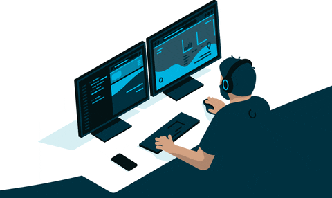

The programmer industry is changing with each passing day, the technology system is updated rapidly, new technologies and new frameworks are emerging one after another, all technologies are like a bottomless pit, the more you learn, the more you will find that you don’t understand Learn more.
Therefore, once you choose this industry, it means that you have to keep learning to keep up with everyone's footsteps, and to become an excellent programmer, you need to use the right methods and set the right goals to keep up. learn.
As an old driver who has been blowing water in various technical groups all the year round but is very enthusiastic, when he sees someone asking a question, he will always jump out to help solve the problem. Therefore, many friends in the group often ask me what to do. I learned a technique like this, and everyone affectionately called me the helper.
I have been fond of computers since I was a child, especially logical thinking. When I was in high school, I often lost sleep when doing math problems. Even in my dreams, I was doing math problems. When I went to college, I often took computer classes in other classes. Self-taught, I learned a lot of complicated things, not systematic, but because of my love for computers, I got a better job in my career, and I like it because of my love.
The first thing to say is that the learning of technology is a process of accumulation over time, from quantitative change to qualitative change. There is no way to make you become a big cow in a short period of time. The so-called step to the sky is reserved for those legendary geniuses, but geniuses After all, it is only a very small number of people. Most of the Daniel still rely on perseverance and perseverance, crowned with correct learning methods, and through continuous efforts, continuous learning, and spending a lot of energy to achieve their current achievements. So, when you read through the official documents, you actually only took a small step. To become a real big cow, you still need to work hard in your subsequent studies.
Although there are a lot of dry articles on the blog, in most cases the knowledge system is relatively fragmented. Compared with books, it is not so systematic, and compared with video tutorials, it is not so intuitive, so put aside the documentation and For blog learning, we also need to study additional books or video tutorials according to our own situation.
Some people feel that they can’t stop reading a book. My method is to set a small goal for yourself when reading a certain book, such as reading at least 20 pages of the book every day, so that you don’t learn too much every day. It is easy to make people anxious. Of course, you can set the daily reading volume according to your own situation. If you count the daily reading volume of 20 pages, a 500-page book will be read in less than a month.
Here I recommend two books that I like very much, "Code Encyclopedia" and "Refactoring to Improve the Design of Existing Code". Although the technical framework has been changing, the ideas of these software engineering classes have remained unchanged. Interested students You can go and read these two books, I think there will be a lot of gains.
